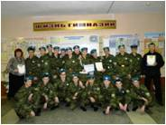
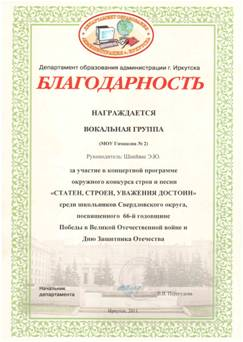
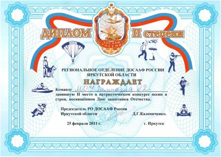

Завершился военно-патриотический месячник "Доблесть. Мужество. Героизм". Несмотря на карантин, гимназистам удалось поучаствовать в следующих мероприятиях:
21 февраля традиционно старшеклассники инсценировали песни. Подробнее... ФОТО
25 февраля 7-е классы, а 1 марта 6-е и 8-е классы показали своё мастерство в конкурсе песни и строя:
26 февраля учащиеся 1 - 5 классов участвовали в военно-спортивной игре "Зарничка" . Ребята преодолевали препятствия, бегая по территории гимназии и выполняя разные задания:
|  | 25 февраля бурными апплодисментами встречали гимназисты и учителя наш взвод юнармейцев, занявших II место в окружном смотре-конкурсе "Статен. Строен. Уважения достоин". Второй год подряд под командованием Казанкова Дмитрия взвод десантников становится призёром конкурса. Ребята молодцы! Руководители команды Якунина Т. В. и Свинаренко С. В. считают, что мальчишки были безусловными лидерами смотра в этом году. Но мы рады, что гимназия победила! ПОЗДРАВЛЯЕМ! |
|  |  |